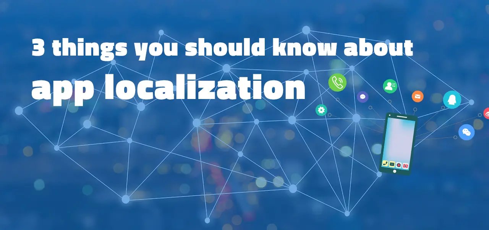
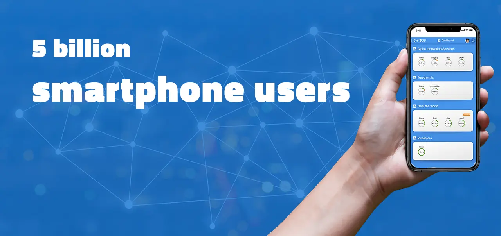

Today you're going to learn what app localization is and how to use it to greatly simplify your app's content management.
Table of contents
- What is mobile app localization?
- Make your app scalable with localization
- What is the difference between localization and internationalization?
- What is the process of localization?
- App-store optimization for localization
- How to find translators?
- App-localization-tips: How to localize your app
- How it worked for others
- Conclusion
In fact, this tips have helped three clients of us to manage multiple languages and significantly growth their potential user base. Effective localization will ensure that your product is not only meeting the requirements of your chosen demographics, but also helping you to reach new audiences.
Therefore, you'll appreciate this article if you wish to increase the number of registrations for your mobile application.
Let's begin by having an understanding of the purpose of app localization.
What is mobile app localization?
In this highly connected digital world, globalization is an essential part of any business. Being able to effectively reach and engage with customers around the world is crucial, especially for mobile app developers.
With the rise of smartphones, apps have become a core part of our daily lives. From ordering food to watching films, research has shown that over 230 billion mobile apps were downloaded in 2021 alone.
This extensive use means localization of an app is crucial in ensuring your products can reach consumers anywhere in the world. What is this localization, though, and how can it help?
Make your app scalable with localization
Mobile-app-localization is a highly beneficial aspect of any business. This is a unique process that requires you to adapt your app so that it can be used by consumers in a wide range of localities.
This could require adapting the wording so that it is in the right language, or even changing the layout to suit the target market. With nearly five billion smartphone users in the world, the localization of apps ensures that your product can be enjoyed by customers no matter where they might be located.

What is the difference between localization and internationalization?
Localization and internationalization are two vital strategies for any business, but many people often confuse the two. While they are two similar methods and both rely on each other, they do have two very different approaches.
Internationalization is the process of adapting your mobile app code so that it can be easily modified and adapted into the required language. On the other hand, localization is the process of actually customizing the content so that it meets the expectations of the chosen destination.
This means that internationalization needs to happen first, ensuring that mobile app coding is ready to meet the adaptations of localization.
Find out more about internationalization in our guide on what is i18n.
You can't wait to see how others did it. Please read through some success stories .
What is the process of localization?
While there can be no denying the many benefits that come from localization, it is a comprehensive and time-consuming task. To help you, we have taken a closer look at the process:
1) Planning
The first stage of any localization strategy is to ensure that you focus on your planning.This process should cover:
- deciding which countries and regions to target with your app localization efforts.
- the research into the languages you are looking to focus on, how you will do this, and what requirements are needed to successfully meet the demands of your target audience.
2) Execution
Once you have comprehensively planned your localization strategy for the app, the next step is to execute the changes. This should be taken with the utmost care and attention, carefully working through every aspect and feature of the app to ensure that they are meeting the requirements.
Here are some examples:
- Translate your app's title, description, and keywords into the target language to improve visibility and search ranking in local app stores.
- Adapt your app's screenshots and videos to better fit the cultural preferences and expectations of local users.
The coming chapter gives you the full list of potential optimizations for a mobile app.
3) Testing
With the translations made, you need to ensure that you are conducting a comprehensive testing strategy to ensure that it meets the exact requirements of your target audience. A beta test is the most effective way of doing this.
Beta testing is the process of having the app reviewed by native speakers of your target demographics, having them review the copy and design. This should not be rushed, and you should be methodical with your beta testing to guarantee the very best result.
- Test your app with real users in your area, and ask them to give you feedback on the localization as they use it.
- Verify text and character encoding to ensure that everything is accurately encoded and shown on all devices.
- Verify linguistic and cultural consistency: Make sure that all app components, including text, graphics, and sounds, are suitable from a culture standpoint and adhere to regional norms.
- Test the language switching capability of the app to ensure that users can quickly and simply switch between languages.
Including an in-app feedback feature can be very beneficial, with research showing that it can increase feedback by up to 750%.
4) Publish your updates
Once your beta tests have been completed, it is time to publish your updates. This is the final step to getting your mobile app out there and being used by consumers.
5) Bonus tip – read customer reviews and check analytics data
Of course, there is no better way to ensure that your app is the very best it can be than by reading customer reviews. This is your chance to see exactly what customers are thinking, allowing you to adapt the app accordingly.
Your app analytics are an excellent location to look for potential growth directions. Determine where the majority of your consumers or loyal users originate from.
App-store optimization in terms of localization
- Translate app metadata: To improve visibility and search ranking in local app stores, translate your app's title, description, and keywords into the target language.
- Target local keywords: Conduct keyword research to identify relevant local keywords and include them in the metadata of your app.
- Localize app visual assets: Tailor your app's screenshots and videos to the cultural preferences and expectations of your target audience.
- Provide local payment options: To increase conversion rates among local users, provide local payment options such as local currency and popular payment methods.
- Engage with local communities, such as online forums and social media groups, to raise awareness and promote your app to potential users.
- Provide local customer support: To provide a better experience for local users, provide local customer support, such as a local language helpline or chat service.
- Customize in-app content: Tailor in-app content like promotions and notifications to the local culture and language.
- Localize in-app purchases: To improve conversion rates and user experience, localize in-app purchases such as pricing and product descriptions.
- Monitor your app's ranking in local app stores and make any necessary adjustments to your ASO strategy based on the results.
1) Background
The first thing to do is to review their background. You want to ensure that your chosen translator has a proven history in your target language, either being a native speaker or has spent considerable time in that country.
2) Be clear
When engaging with a translator, you should make sure that you are as clear and straightforward as possible. The more thorough you are with your instructions, the better your translator will be able to understand your requirements.
3) Ask for examples
Another top tip when it comes to finding the very best translator possible is to ask for examples. Any professional translator will be happy to showcase their past work, allowing you to review their results.
In our ecosystem, there is a way we make this much easier for you. Learn here how to find a translator.
How to choose the right localization technology
Technology has transformed the world around us, helping to make things more efficient and easier. This is true when it comes to mobile-app localization, and there are some fantastic options out there to help you make the process as quick and as easy as possible.
However, it is essential that you are utilizing the right technology. Not having the right localization-tools can lead to poor results, so when it comes to finding the right localization technology, there are certain things you should look for:
- A collaborative process that allows copywriters, designers, managers, and more, to work together.
- A solution that lets you reuse app strings and content, helping to save you time and money.
- A built-in glossary of mobile app terms to ensure consistency.
- Automation tools for tasks such as string extractions, performance monitoring, workflow management, and screenshot generation.
- Integration with other essential apps such as Slack and Jira.
- Ability to support multiple file types and file-format.
You can improve the user experience of your global app and attract more customers by implementing a proper translating-app process for your content. This is why every app-business should use localization services.
App-localization-tips: How to localize your app
When it comes to app localization, there are several top tips to remember. The first is to ensure that you are being as comprehensive as possible in your beta testing. This will give you the knowledge and insight on what is working and what areas still need to be improved.
You should also ensure that you are being as flexible as possible when it comes to adapting your mobile app into different languages. You also want to ensure that your app is able to support languages that read right-to-left and left-to-right, guaranteeing that it flows for readers no matter where in the world that they might be based.
The support of numerous languages will also have a favorable impact on the app store listing .
Another helpful tip is to transfer strings from code to resource files. Because storing strings in resource files before deploying code allows the team to access those files for translation later without having to change the code. The team may access those files for translation without having to update the code itself.
Check out our localization software; it's exactly what we can help you with, and it only takes a few steps to get started.
How it works for others
We offer a simple and scalable translation management system that has assisted many of our customers in attaining their development with mobile applications.
1) naki
Naki was able to manage and keep up their products in more than six languages. Locize is for them, they claimed:
As a product company which releases mobile applications throughout Europe, we were looking for a tool that allows us to easily involve who translate and keep the maintenance of the copywriting seamless.

2) retraced.com
Retraced, a blockchain-based platform for supply chain transparency that focuses on the end user, uses locize for its app localization
We utilise locize throughout our infrastructure in two mobile applications. Locize is a very reliable service and scales beautifully with the business.

3) barntools.com
BarnTools, a digital biosecurity platform created by producers for producers, used locize to quickly and easily localize its mobile application.
It enables our global team perform the translation work anywhere and anytime. We also get to maintain the translations in realtime.

Conclusion
It is now up to you to make a decision.
The process of adjusting a mobile app's functionality and user experience for users in various target markets is known as localization.
Start to plan your target regions and langauges.
A highly scaleable solution will ensure that your iOS, Android, or other app meets your customers' needs and that you can execute the project efficiently.
Because how you handle the app translation process will determine your mobile application's success and ability to reach a worldwide audience.
You may discover how to use locize in your development and how your team can work with it by clicking the link below.
In the end, localizing your apps will increase your revenue and enhance user experience.
Now we'd like to invite you to share this with any developer, project manager, or business that could benefit from it.